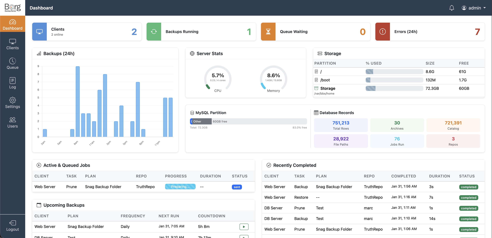

A web-based management interface for BorgBackup. Schedule, monitor, and restore backups across all your servers.
View on GitHub
The BBS dashboard — monitor clients, jobs, storage, and server health at a glance.
Everything you need to manage BorgBackup at scale.
Lightweight Python agent runs on each server, communicating securely with the central management server.
Repositories use BorgBackup's append-only mode over SSH, preventing any client from deleting backups.
Guided setup walks you through database, SSH keys, repositories, and first user creation.
Watch backup and restore operations in real time with live progress bars and log streaming.
Browse archive contents and restore individual files or directories directly from the web UI.
Download entire archives or selected paths as compressed tarballs.
Cron-based scheduling with support for multiple schedules per machine.
Define reusable backup configurations with paths, excludes, and options — apply to any machine.
Configure keep-daily, keep-weekly, keep-monthly rules to automatically prune old archives.
Role-based access control with admin and operator roles for team environments.
Centralized job queue ensures backups run in order without overloading your servers.
Repository passphrases are encrypted at rest using application-level encryption.
Get notified on backup failures, missed schedules, and other critical events.
At-a-glance overview of all machines, recent backups, failures, and storage usage.
Extensible pre-backup hooks — includes a MySQL dump plugin out of the box.
Agent-based design keeps your backup server secure and in control.
Built on proven, reliable open-source technologies.
Up and running in minutes.